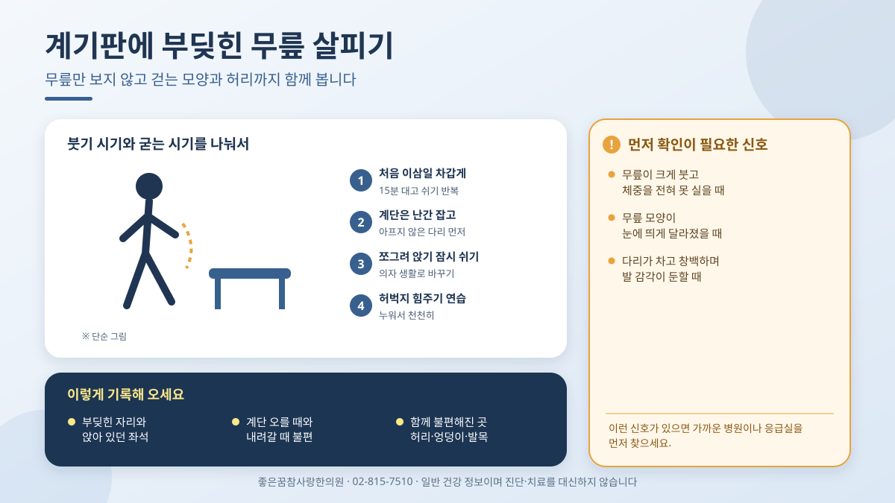

이종호 한의사 감수좋은꿈참사랑한의원 대표원장 (한의사 면허번호 19769)발행 2026-11-26 · 수정 2026-11-26
이 글의 차례
사고 당일에는 목과 허리만 신경 쓰입니다. 무릎은 조금 얼얼했을 뿐이라 대수롭지 않게 넘깁니다. 그런데 며칠 지나 계단을 내려가거나 쪼그려 앉으려는 순간, 무릎 앞쪽이 찌릿하고 시큰합니다. 그제야 사고 때 무릎이 어딘가에 쾅 부딪혔던 기억이 떠오릅니다.
진료실에서 교통사고로 오신 분들의 이야기를 듣다 보면 무릎은 늘 뒤늦게 등장합니다. 목과 허리가 먼저 아프니 무릎은 순서에서 밀려나고, 조금 지나면 괜찮아지겠지 하며 미뤄 두기 쉽습니다. 그러다 걷는 모양이 달라지고, 그 때문에 허리와 발목까지 피곤해지기도 합니다.
차가 앞쪽으로 충격을 받으면 몸은 순간적으로 앞으로 쏠립니다. 안전벨트가 상체를 붙잡아도 아래쪽 다리는 앞으로 밀려 무릎이 운전석 아래 계기판이나 앞좌석 등받이에 닿기 쉽습니다. 이렇게 부딪혀 생긴 무릎 통증을 흔히 계기판 손상이라고 부르기도 합니다.
이 글에서는 무릎이 부딪힌 뒤 어떤 불편이 생길 수 있는지, 병원 검사와 한의원 진료를 어떤 순서로 이어 가면 좋은지, 집에서는 무엇을 살피면 좋은지를 차례로 정리했습니다. 무릎만 따로 보지 않고 걷는 모양과 허리까지 함께 보는 것이 이 글의 중심입니다.
무릎이 계기판에 부딪히면 어디가 불편해지나요?
무릎 앞쪽에는 무릎뼈(슬개골)가 있고, 그 아래로 무릎뼈와 정강이를 잇는 힘줄이 지나갑니다. 계기판에 정면으로 부딪히면 이 무릎뼈 주변과 바로 아래 힘줄 자리, 그리고 그 위를 덮은 피부와 살에 멍과 붓기가 생기기 쉽습니다.
무릎을 굽힌 채 정강이 윗부분이 먼저 부딪히면 충격이 정강이를 뒤로 미는 방향으로 전해집니다. 이때는 무릎 안쪽 깊은 곳이나 무릎 뒤쪽이 묵직하게 불편하다고 말씀하시는 분이 있습니다. 같은 사고라도 부딪힌 각도에 따라 불편한 자리가 달라집니다.
무릎에 닿은 충격은 허벅지를 타고 엉덩이 관절까지 올라가기도 합니다. 그래서 무릎을 부딪힌 분이 며칠 뒤 사타구니나 엉덩이 옆이 뻐근하다고 하시는 일도 있습니다. 진료실에서는 무릎만 보지 않고 엉덩이와 허리까지 함께 여쭙는 이유입니다.
겉으로 보이는 멍은 대개 며칠 사이 색이 바뀌며 옅어집니다. 하지만 멍이 빠진 뒤에도 쪼그려 앉기, 무릎 꿇기, 계단 내려가기가 계속 불편하다면 겉만이 아니라 안쪽 구조까지 다시 살펴볼 필요가 있습니다.
왜 사고 며칠 뒤에 무릎이 더 아파질까요
사고 직후에는 놀람과 긴장 때문에 몸이 통증을 덜 느끼는 경우가 많습니다. 목과 허리처럼 더 크게 아픈 곳이 있으면 무릎의 불편은 뒤로 밀리기도 합니다. 그러다 긴장이 풀리고 일상으로 돌아오면서 무릎이 비로소 말을 걸기 시작합니다.
부딪힌 자리는 하루 이틀 사이 붓기가 차오르면서 오히려 더 뻐근해질 수 있습니다. 붓기는 무릎을 굽히는 각도를 줄이고, 굽힐 때마다 앞쪽이 당기는 느낌을 만듭니다. 그래서 사고 다음 날보다 사흘째에 더 불편하다는 말씀이 드물지 않습니다.
아픈 무릎을 아끼느라 반대쪽 다리에 체중을 더 싣고 걷게 되는 것도 이유입니다. 이렇게 걸음이 한쪽으로 기울면 아픈 무릎은 덜 쓰여 더 굳고, 반대쪽 무릎과 허리는 더 피곤해집니다. 처음 부딪힌 자리보다 넓은 범위가 불편해지는 흐름입니다.
비슷해 보여도 다르게 살피는 무릎 불편
무릎 앞쪽이 아프다고 해서 모두 같은 상태는 아닙니다. 사고 전부터 계단에서 시큰하던 무릎이 사고로 더 불편해진 것인지, 사고로 새로 생긴 불편인지에 따라 살피는 방향이 달라집니다. 그래서 사고 전 무릎 상태를 꼭 여쭙습니다.
- 부딪힌 자리의 멍과 붓기: 눌렀을 때 아프고, 며칠에 걸쳐 색과 크기가 변합니다.
- 무릎뼈 아래 힘줄 자리 불편: 점프나 계단, 쪼그려 앉기에서 무릎뼈 바로 아래가 아픕니다.
- 무릎 안쪽 깊은 불편: 비틀거나 돌 때 걸리거나 빠지는 느낌이 있을 수 있습니다.
- 예전부터 있던 무릎 불편이 심해진 경우: 아침에 뻣뻣하고 오래 걸으면 시큰합니다.
이 가운데 무릎이 갑자기 힘없이 꺾이거나 걸려서 펴지지 않는 느낌이 있다면, 정형외과에서 영상 검사를 먼저 받아 보시길 권합니다. 한의원 진료는 그 결과를 바탕으로 함께 이어 갈 수 있습니다.
병원 검사와 한의원 진료는 어떤 순서로 이어 가나요?
무릎을 세게 부딪혔다면 먼저 정형외과에서 사진 검사로 뼈에 금이 가거나 어긋난 곳이 없는지 확인하시는 것이 순서입니다. 무릎뼈는 피부 바로 아래에 있어 정면 충격을 그대로 받기 때문에, 붓기가 크거나 체중을 싣기 어렵다면 검사를 미루지 않는 편이 좋습니다.
검사에서 큰 이상이 없다는 말을 들었는데도 불편이 이어진다면, 그때부터는 무릎이 어떤 동작에서 아픈지, 걷는 모양이 어떻게 바뀌었는지를 차근차근 살필 때입니다. 한의원 진료는 이 단계에서 정형외과 진료와 나란히 이어 갈 수 있습니다.
병원에서 무릎 안쪽 구조를 더 자세히 보자는 말을 들으셨다면 그 검사를 먼저 받아 보시길 권합니다. 결과지를 가져와 주시면 그 내용을 바탕으로 무릎에 부담이 덜 가는 범위 안에서 진료 방향을 정합니다.
운동과 운전으로 돌아갈 때 살필 점
무릎이 조금 편해지면 바로 예전처럼 등산이나 달리기를 하고 싶어지십니다. 하지만 평지 걷기가 편해진 것과 내리막, 계단, 점프가 편해진 것은 다릅니다. 평지 걷기, 계단, 가벼운 오르막, 내리막 순서로 하나씩 늘려 가시길 권합니다.
운전석에 다시 앉을 때도 무릎을 생각해 주세요. 페달을 밟을 때 무릎이 너무 접히지 않도록 의자를 조금 뒤로 빼고, 오래 운전한다면 한 시간에 한 번은 내려서 무릎을 펴고 걸어 주는 것이 좋습니다.
무릎이 부딪힌 기억 때문에 운전석에서 다리를 잔뜩 웅크리고 계신 분도 있습니다. 그렇게 긴장한 자세는 허벅지와 무릎 앞쪽을 오히려 더 굳게 만듭니다. 출발 전 숨을 한 번 길게 내쉬고 다리 힘을 풀어 주는 것부터 해 보세요.
먼저 이렇게 여쭙니다
교통사고로 무릎이 불편해 오시면 저는 대략 이런 순서로 여쭙니다. 정확히 기억나지 않는 부분은 그렇다고 말씀해 주셔도 괜찮습니다.
- 사고 때 어느 자리에 앉아 계셨고, 무릎이 어디에 닿았나요?
- 부딪힌 직후 걸을 수 있었나요? 붓기는 언제 가장 심했나요?
- 계단을 오를 때와 내려갈 때 중 언제 더 아프신가요?
- 쪼그려 앉기, 무릎 꿇기, 양반다리 가운데 어려운 동작이 있나요?
- 사고 전에도 무릎이 불편한 적이 있었나요?
- 병원에서 어떤 검사를 받으셨고, 결과는 어떻게 들으셨나요?
사고 전 운동 습관이나 직업도 함께 여쭙니다. 하루 종일 서서 일하시는지, 계단이 많은 길로 다니시는지, 쪼그려 앉는 일이 많은지에 따라 무릎이 받는 부담이 달라지기 때문입니다.
일상에서 먼저 해 볼 수 있는 것
부딪힌 지 얼마 되지 않아 붓고 열감이 있다면, 처음 이삼일은 차가운 찜질을 짧게 여러 번 해 보세요. 얼음을 수건에 싸서 십오 분 정도 대고 쉬기를 반복하면 됩니다. 붓기와 열감이 가라앉은 뒤에는 따뜻한 수건이 더 편하게 느껴지는 분이 많습니다.
- 앉아 있을 때 발을 낮은 받침에 올려 무릎이 너무 오래 굽혀지지 않게 하기
- 계단을 내려갈 때는 난간을 잡고 아프지 않은 다리를 먼저 내리기
- 쪼그려 앉기와 무릎 꿇기는 불편이 줄 때까지 잠시 미루기
- 바닥 생활보다 의자 생활로 잠시 바꾸기
- 누워서 다리를 곧게 편 채 허벅지에 힘을 주었다 푸는 동작을 천천히 해 보기
무릎을 너무 아끼느라 아예 움직이지 않으면 허벅지 근육이 빠르게 약해질 수 있습니다. 아프지 않은 범위 안에서 무릎을 천천히 굽혔다 펴는 동작을 하루 몇 번 해 주시는 것이 좋습니다. 움직인 뒤 다음 날 더 붓거나 아프다면 양을 줄이면 됩니다.
걷는 모양도 거울 앞에서 한번 살펴보세요. 아픈 쪽 다리를 짧게 딛고 반대쪽으로 몸을 기울이고 있다면, 보폭을 조금 줄이고 천천히 걸어 양쪽에 체중을 고르게 싣는 연습부터 해 보시길 권합니다.
잠자리와 집 안에서 무릎을 덜 쓰는 법
밤에 옆으로 누우면 위쪽 무릎이 아래쪽 무릎을 누르면서 부딪힌 자리가 욱신거릴 수 있습니다. 이럴 때는 두 무릎 사이에 얇은 베개를 끼워 보세요. 똑바로 누울 때는 무릎 아래에 쿠션을 받쳐 살짝 굽혀 두면 앞쪽이 덜 당기는 분이 많습니다.
바닥에 앉았다 일어서는 동작은 무릎을 가장 깊게 굽히는 동작 가운데 하나입니다. 불편한 동안에는 식사나 휴식을 식탁과 의자 쪽으로 옮기고, 화장실 변기나 소파처럼 낮은 자리에서 일어설 때는 팔걸이나 손잡이를 짚어 무릎에 실리는 힘을 나눠 주세요.
장을 보거나 짐을 들고 계단을 오르내리는 일은 잠시 가족과 나누시길 권합니다. 무거운 짐을 든 채 계단을 내려가면 무릎 앞쪽에 몸무게보다 훨씬 큰 힘이 실립니다. 몇 주 동안만 짐의 무게와 계단 횟수를 줄여도 무릎이 쉴 틈이 생깁니다.
한의원에서 함께 살필 수 있는 경우
- 병원 검사에서 큰 이상은 없다고 들었지만 무릎 앞쪽이 계속 시큰한 경우
- 멍은 빠졌는데 계단 내려가기와 쪼그려 앉기가 여전히 불편한 경우
- 무릎을 아끼며 걷다 보니 반대쪽 무릎과 허리까지 뻐근해진 경우
- 무릎 통증 때문에 잠자리에서 자세를 바꾸기 불편한 경우
- 목과 허리 진료를 받으면서 무릎도 함께 살피고 싶은 경우
좋은꿈참사랑한의원에서는 진찰한 내용을 바탕으로 침과 온열 관리, 필요하면 추나 가운데 지금 상태에 맞는 것을 정합니다. 붓기가 남아 있는 시기와 굳은 느낌이 중심인 시기에 따라 접근이 달라지고, 같은 날이라도 무릎과 허리를 함께 볼지 순서를 정합니다.
한약 상담이 필요한 경우에는 드시는 약을 먼저 확인하고 신중하게 정합니다. 정형외과에서 처방받은 약이 있다면 처방대로 이어 가시고, 무릎 상태에 따라 정형외과 진료와 한의원 진료를 나란히 받으실 수 있습니다.
자동차보험으로 진료를 받으실 수 있는지, 접수에 필요한 것이 무엇인지는 상황마다 다를 수 있습니다. 보험사 접수 번호를 메모해 두시고, 한의원 접수 전 전화로 확인해 주세요.
이렇게 기록해 오시면 상담이 쉬워집니다
무릎은 하루 중에도 불편한 정도가 많이 달라집니다. 일주일 정도만 간단히 적어 오시면 어떤 동작에서, 언제 더 불편한지가 훨씬 잘 보입니다.
- 사고 날짜와 앉아 있던 자리, 무릎이 닿은 곳
- 아침에 일어나 첫걸음을 뗄 때의 느낌
- 계단을 오를 때와 내려갈 때 각각의 불편
- 붓기가 있었던 날과 찜질을 한 날
- 무릎 말고 함께 불편해진 자리(허리, 엉덩이, 발목)
휴대폰으로 사고 직후 무릎 사진을 찍어 두셨다면 그것도 도움이 됩니다. 멍의 위치를 보면 어느 방향에서 충격이 왔는지 짐작하는 데 참고가 됩니다.
기록은 길게 쓰지 않으셔도 됩니다. '계단 내려갈 때 앞쪽 찌릿, 어제보다 덜함'처럼 한 줄이면 충분합니다. 이런 짧은 메모가 쌓이면 무릎이 나아지는 방향으로 가는지, 어느 동작에서 멈춰 있는지가 숫자처럼 또렷해지고, 진료 방향을 조정하는 데에도 큰 도움이 됩니다.
정형외과와 한의원을 함께 다니신다면 두 곳에서 들은 설명과 받은 처방도 한 장에 모아 두세요. 어느 곳에서 무엇을 권했는지 정리되어 있으면 겹치거나 빠지는 부분 없이 진료를 이어 가기 쉽습니다.
무릎을 다시 믿고 걷기까지
사고로 다친 무릎은 몸뿐 아니라 마음에도 흔적을 남깁니다. 계단 앞에서 잠깐 멈칫하게 되고, 차에 탈 때 무릎을 접는 것이 괜히 조심스러워집니다. 그 마음은 자연스러운 것이니 서두르지 않으셔도 됩니다.
오늘은 계단 한 층을 난간 잡고 천천히, 내일은 의자에서 일어날 때 양쪽 다리에 고르게 힘을 싣는 연습처럼 작은 목표부터 하나씩 세워 보세요. 그 과정을 기록과 함께 가져오시면 다음 걸음을 함께 정하겠습니다.
이런 증상은 먼저 확인이 필요합니다
- 무릎이 크게 붓고 체중을 전혀 싣지 못하거나 무릎 모양이 눈에 띄게 달라진 경우
- 다리가 차갑고 창백해지거나 발과 발가락 감각이 둔해지고 저린 경우
이런 신호가 있으면 한의원보다 가까운 병원이나 응급실을 먼저 찾으세요.
함께 읽으면 좋은 글
- 교통사고 다음 날부터 뻐근해지기 시작했다면 어떻게 살피나요?
- 무릎 앞쪽, 무릎뼈 주변이 시큰한 슬개대퇴통증은 어떻게 살피나요?
- 무릎에 물이 찼을 때 초음파로는 무엇을 확인할 수 있나요?
- 교통사고 뒤 자동차보험으로 한의원 치료를 받으려면 어떻게 진행되나요?
- 교통사고 치료 중에는 무엇을 기록해 두면 좋을까요?

여쭙는 것
- 사고 때 어느 자리에 앉아 계셨고, 무릎이 어디에 닿았나요?
- 부딪힌 직후 걸을 수 있었나요? 붓기는 언제 가장 심했나요?
- 계단을 오를 때와 내려갈 때 중 언제 더 아프신가요?
생활에서 해 볼 것
- 앉아 있을 때 발을 낮은 받침에 올려 무릎이 너무 오래 굽혀지지 않게 하기
- 계단을 내려갈 때는 난간을 잡고 아프지 않은 다리를 먼저 내리기
- 쪼그려 앉기와 무릎 꿇기는 불편이 줄 때까지 잠시 미루기
한의원에서 함께 살필 것
- 병원 검사에서 큰 이상은 없다고 들었지만 무릎 앞쪽이 계속 시큰한 경우
- 멍은 빠졌는데 계단 내려가기와 쪼그려 앉기가 여전히 불편한 경우
- 무릎을 아끼며 걷다 보니 반대쪽 무릎과 허리까지 뻐근해진 경우
먼저 확인이 필요한 신호
- 무릎이 크게 붓고 체중을 전혀 싣지 못하거나 무릎 모양이 눈에 띄게 달라진 경우
- 다리가 차갑고 창백해지거나 발과 발가락 감각이 둔해지고 저린 경우
한눈에 보는 표
| 구분 | 핵심 |
|---|---|
| 여쭙는 것 | 사고 때 어느 자리에 앉아 계셨고, 무릎이 어디에 닿았나요? 부딪힌 직후 걸을 수 있었나요? 붓기는 언제 가장 심했나요? |
| 생활에서 해 볼 것 | 앉아 있을 때 발을 낮은 받침에 올려 무릎이 너무 오래 굽혀지지 않게 하기 계단을 내려갈 때는 난간을 잡고 아프지 않은 다리를 먼저 내리기 |
| 한의원에서 함께 살필 것 | 병원 검사에서 큰 이상은 없다고 들었지만 무릎 앞쪽이 계속 시큰한 경우 멍은 빠졌는데 계단 내려가기와 쪼그려 앉기가 여전히 불편한 경우 |
| 먼저 확인이 필요한 신호 | 무릎이 크게 붓고 체중을 전혀 싣지 못하거나 무릎 모양이 눈에 띄게 달라진 경우 다리가 차갑고 창백해지거나 발과 발가락 감각이 둔해지고 저린 경우 |
자주 묻는 질문
사고 때 무릎을 부딪혔는데 당일에는 괜찮았어요. 지금 가도 되나요?
네, 무릎 불편은 며칠 지나 붓기와 함께 뚜렷해지는 경우가 많습니다. 사고 날짜와 부딪힌 자리를 기억나는 대로 말씀해 주시면 그에 맞춰 살펴봅니다.
병원 사진 검사에서 이상이 없다는데 왜 계속 아픈가요?
사진 검사는 뼈를 보는 데 강하고, 멍이나 붓기, 힘줄 주변의 불편은 잘 드러나지 않을 수 있습니다. 동작과 눌림 통증을 함께 확인하고, 필요하면 정형외과의 추가 검사를 권해 드립니다.
무릎에 찜질은 차갑게 해야 하나요, 따뜻하게 해야 하나요?
막 부딪혀 붓고 열감이 있을 때는 차갑게, 붓기가 가라앉고 굳은 느낌이 중심이면 따뜻하게 하는 분이 많습니다. 찜질 뒤 더 불편해지면 멈추고 진료 때 말씀해 주세요.
목과 허리 치료를 받으면서 무릎도 같이 볼 수 있나요?
네, 진찰한 내용을 바탕으로 같은 날 함께 살필지, 순서를 나눌지 정합니다. 걷는 모양이 허리와 연결되는 경우가 많아 함께 보는 편이 도움이 될 때가 많습니다.
좋은꿈참사랑한의원은 재진 때 지난번 이야기부터 이어서 여쭙니다. 진료시간과 예약은 오시는 길에서 확인하세요.
어디서 상담받을 수 있나요?
좋은꿈참사랑한의원은 서울 동작구 만양로2길 2 신성빌딩 3층·5층(서울 동작구 상도동, 7호선 상도역 3번 출구 근처)에 있습니다. 한의사 3명(이종호 대표원장, 조영기 수석진료원장, 정원영 진료원장)이 진료합니다. 진료시간은 평일 09:30~20:00(점심 13:00~14:00), 토·일·공휴일 09:30~15:00이며, 방문 전 전화로 확인을 권합니다. 예약은 네이버 예약, 카카오톡 상담, 전화 02-815-7510로 받습니다.
이 글은 일반적인 건강 정보이며 개인의 진단이나 치료를 대신하지 않습니다. 증상이 있거나 복용 중인 약이 있다면 진료를 통해 확인하세요. 치료 효과는 개인마다 다를 수 있습니다.
작성 기준: 일반적으로 알려져 있는 건강 정보를 참고해 정리했습니다(대표원장 감수). 증상 기록은 1~2주 동안 하루 1회, 비슷한 시간에 적어 오시면 지난 상태와 비교하기 쉽습니다.